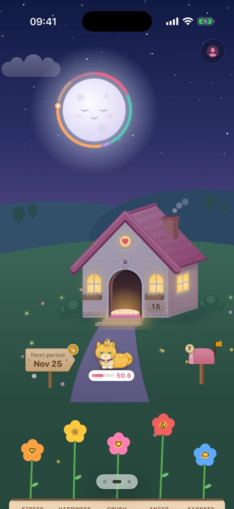

Today
Your cycle as a sun
The sun over your garden is a dial. Its ring is your cycle, and a dot marks today. The sky follows the real sun and your weather, so evenings glow and nights bring out the moon.
- Period
- Follicular
- Ovulation
- Luteal
- Tap the sun, or the moon, to sync with Apple Health.
- The signpost shows when your next period is expected.
